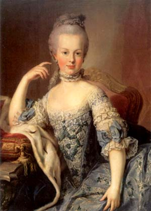
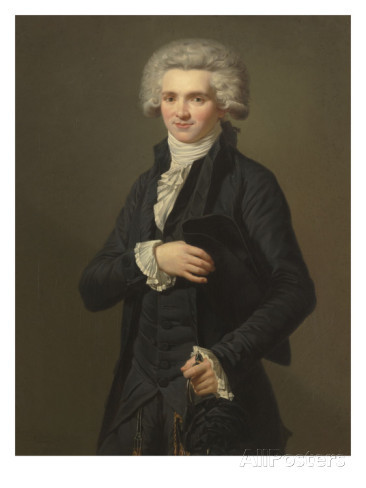

El Canon de belleza en la Revolución Francesa
Las Mujeres
Caderas anchas, pechos grandes, cinturas estrechas, pelucas pomposas, perfumes en exceso, ropa exagerada y piel muy pálida
Los Hombres
Uso de pelucas, piel blanca, mejillas sonrojadas y por encima de todo trajes extravagantes con infinitas capas
Mujer de la revolución francesa

Hombre de la revolución francesa

Realizado por:
Diego Pérez García
Alejandro Gago Martín
Jorge Hernández Toledo
David García Gil